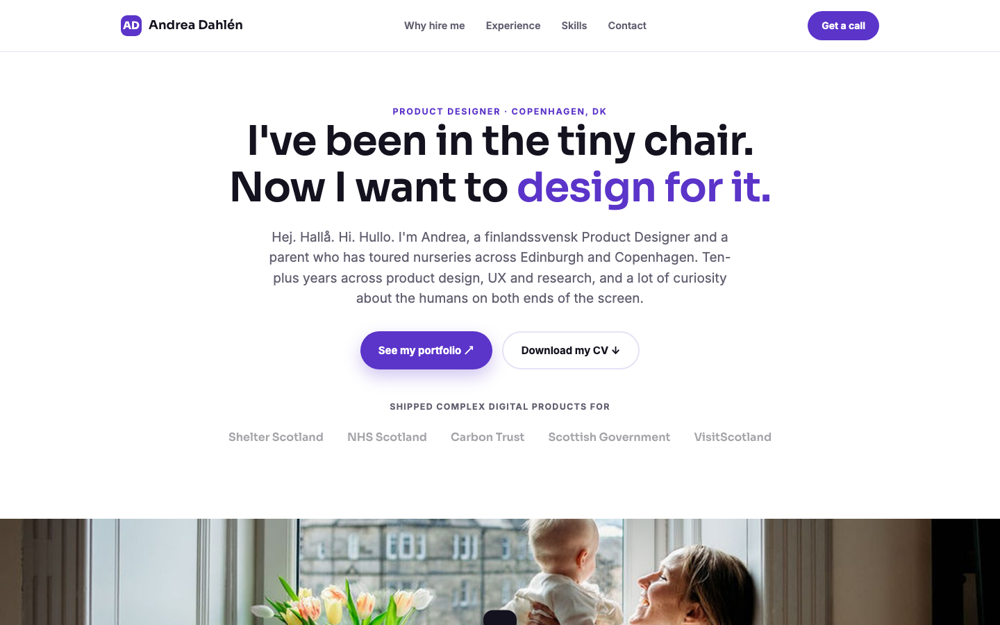

Famly — a speculative concept, built rather than described
A self-initiated piece: rather than writing about how I would approach a product, I designed and shipped a working prototype of it, end to end.

The idea
Most portfolio pieces describe a process. This one demonstrates it. Instead of explaining how I would approach a product, I designed and built a working prototype and put it online, where it can be clicked rather than read about.
The framing came from a position I actually hold: I have been the parent touring nurseries in two countries, so I have been on the receiving end of the software as well as the designing end of it.
How I work now
The prototype is also an honest record of how my process has changed. It was designed and built with AI assistance — Claude and Claude Code — which shortened the distance between an idea and something clickable to hours rather than weeks.
That shift matters for the kind of work I do. When a concept can be built cheaply enough to be tested rather than debated, the argument in the room changes from opinion to evidence.
See it running
The prototype is deployed and public — the most useful thing I can show is the thing itself.